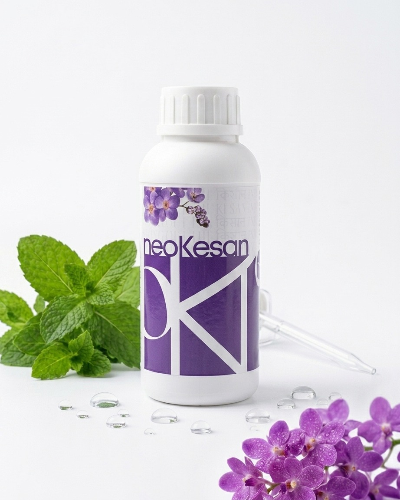
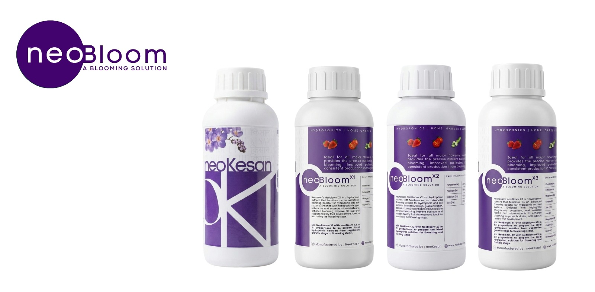
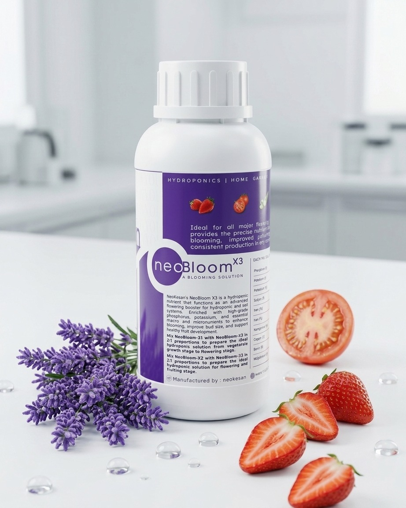

Hydroponic
NeoPonic A & B Full Set
Complete two-part base nutrients for all hydroponic systems. Includes Part A and Part B.
₹679Buy on Amazon
Precision nutrient solutions engineered for every grower — from a sunny windowsill to a thriving commercial farm.
Clean, complete nutrition for each stage of your growing journey.
Complete two-part base nutrients for all hydroponic systems. Includes Part A and Part B.





Staged blooming system with X1 (vegetative), X2 (flowering), and X3 (micro boost) for maximum fruit set.
Targeted foliar nutrition for stronger leaves and faster recovery. Includes growth and recovery formulas.
Take a 60-second quiz and well match you to the right solution.
Tell us about your setup, space, and goals in 60 seconds.
We recommend the ideal nutrient solution combination for you.
Buy on Amazon, Flipkart, or directly from our store.
Follow our guided learn centre — we support your journey.
Soil-less farming drastically reduces chemical runoff. Our formulations are engineered to leave zero harmful residue in the ecosystem.
Grow 5× more plants in the same footprint. Vertical stacking and compact hydroponic systems make balconies and kitchens into productive gardens.
Hydroponics uses up to 90% less water than traditional soil farming. Recirculating systems further minimise waste — every drop counts.
Every neoKesan solution is lab-formulated for Indian growing conditions — climate, water quality, and crop varieties unique to our region.
Nutrient-rich water delivered directly to roots speeds up growth cycles by 30–50%. More harvests per year, more yield per plant.
Our agronomy team is available via WhatsApp, email, and consultation calls. From setup to harvest — we’re with you every step.
NeoPonic · NeoBloom · NeoFolix
NeoPonic A+B is our most popular base nutrient. NeoBloom X1 is the go-to for first-time flower growers. NeoFolix X2 leads in leafy green sales.
Shop the full range on Amazon & Flipkart.4 questions · First-order discount
Answer 4 quick questions. Get a personalised nutrient recommendation + a discount code.
Simplest hydroponic method
A passive method where an absorbent wick (cotton/nylon) draws nutrient solution from a reservoir up to the roots — no electricity needed.
Best for: Herbs, microgreens, small lettucesNFT — thin stream of nutrients
A thin film of nutrient solution flows continuously along the bottom of sloped channels, bathing roots while the upper root zone stays oxygenated. Highly water-efficient and the standard for commercial leafy greens.
Best for: Lettuce, spinach, strawberriesDWC — roots submerged in solution
Plant roots are suspended directly in an oxygenated, nutrient-rich solution. An air pump keeps the water oxygenated 24/7 for rapid root uptake. Very fast growth with a simple setup.
Best for: Lettuce, basil, cucumbers, tomatoesFlood and drain method
The grow tray is periodically flooded with nutrient solution by a pump, then drains back into the reservoir. Creates alternating wet/dry cycles that encourage strong root development.
Best for: Peppers, flowers, root vegetablesPassive · Zero electricity
A non-circulating passive method. The plant starts with roots touching solution; as it drinks, an air gap forms above — giving roots both nutrients and oxygen without any pump.
Best for: Lettuce, herbs, pak choi, spinachTimed drip emitters to root zone
Nutrient solution is delivered drop-by-drop directly to the root zone through drip emitters on a timer. The most widely used hydroponic method commercially.
Best for: Tomatoes, strawberries, large cropsRoots misted in air
Plant roots hang in an enclosed, dark chamber and are misted with nutrient solution at precise intervals. Maximum oxygenation produces the fastest possible growth rates.
Best for: High-value crops, research, commercialSimple, useful guides for a stronger garden.
Start your first soil-less garden at home with no prior experience. Systems, nutrients, and setup — all explained simply.
Read guide →The best leafy greens to grow hydroponically in India — fastest harvest, easiest to maintain, and highest nutrition value.
Read guide →From cherry tomatoes to capsicum — the top fruiting crops that thrive in hydroponic systems and deliver maximum yield.
Read guide →The three most critical variables in any hydroponic grow. How to measure, adjust, and maintain them for a perfect harvest.
Read guide →Answer four quick questions to unlock a first-order discount.
We recommend NeoPonic A + B Starter Kit.
Use code GROW15 at checkout.
Shop now →Sign in or create an account to save your garden profile, addresses and orders.
By continuing, you agree to our Terms and Privacy Policy.
We sent a 6-digit code to .